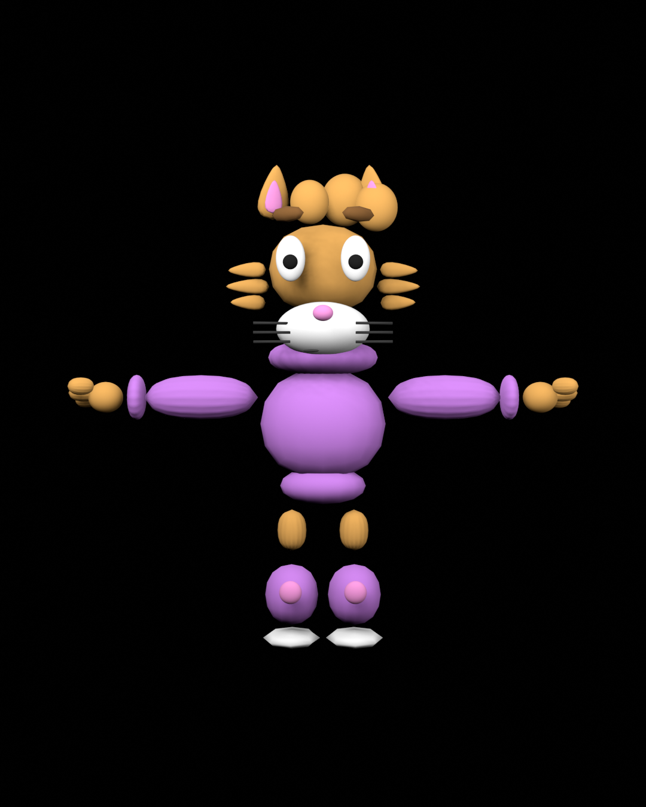
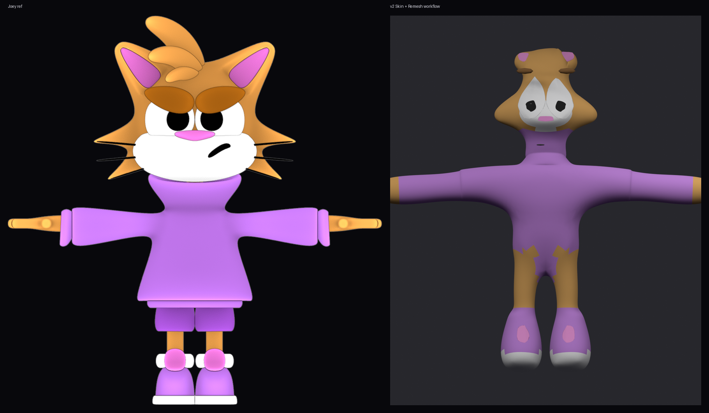
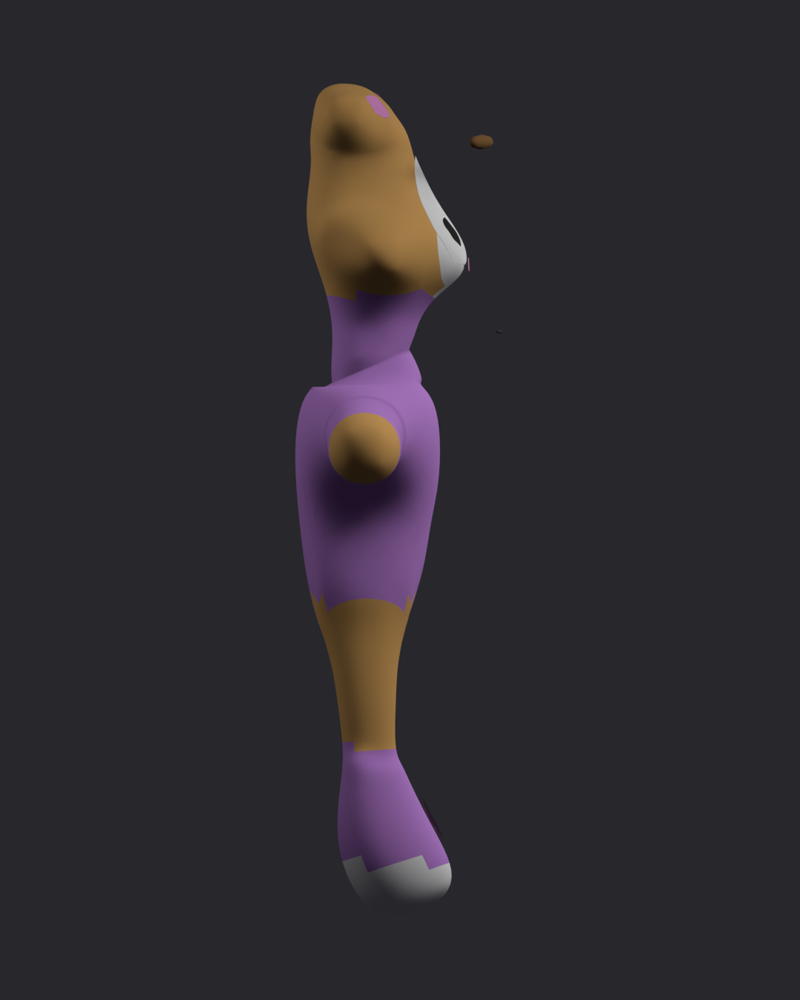
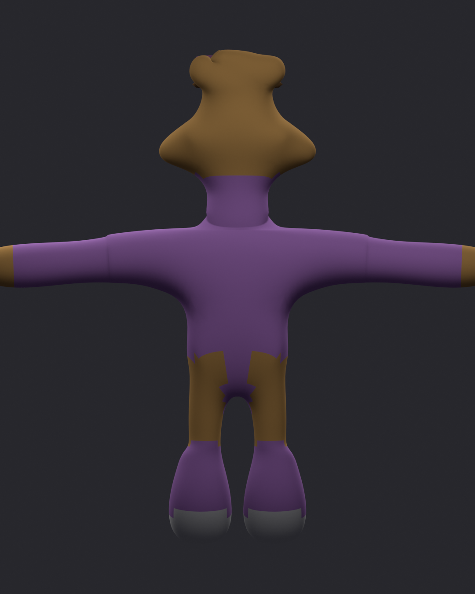
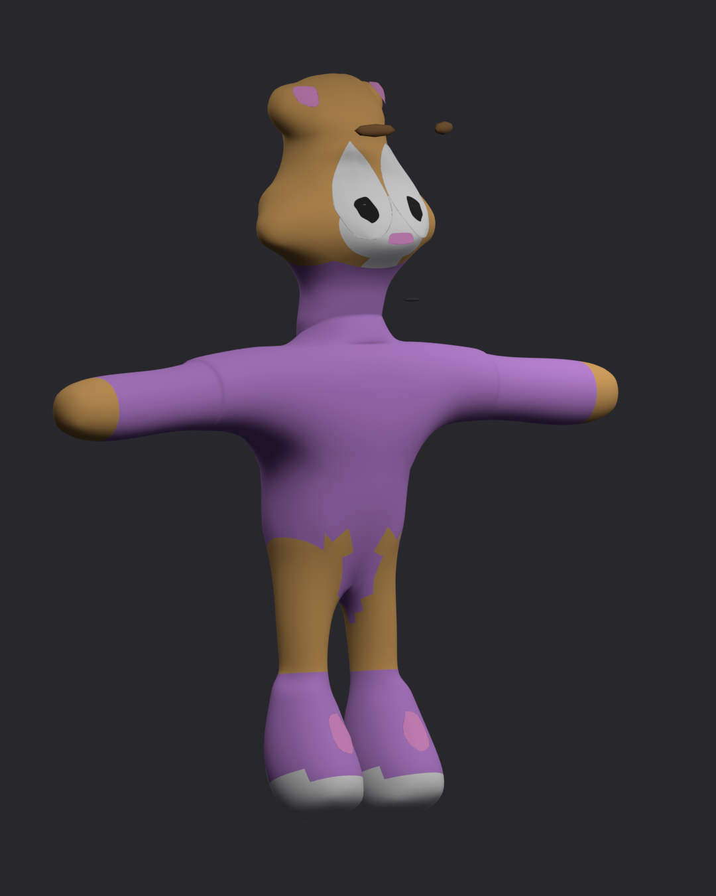

Bizzo demo gallery
 Joey official reference (target)
Joey official reference (target)
 v1 topo — front
v1 topo — front
 v1 topo — side
v1 topo — side
 v1 topo — back
v1 topo — back
 v1 compare
v1 compare

Earlier blockout

v2 Skin workflow — compare vs Joey ref
 v2 — front (connected Skin mesh)
v2 — front (connected Skin mesh)

v2 — side

v2 — back

v2 — 3/4 view